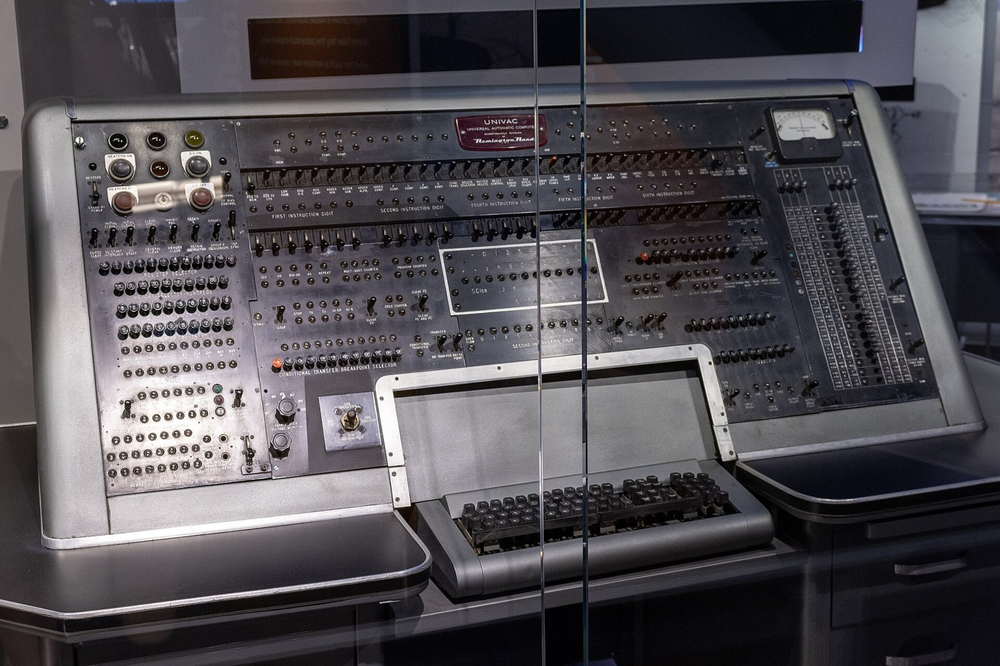
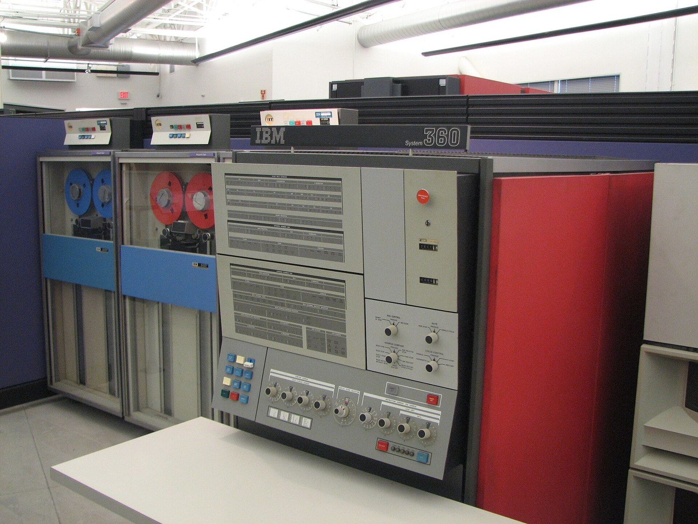
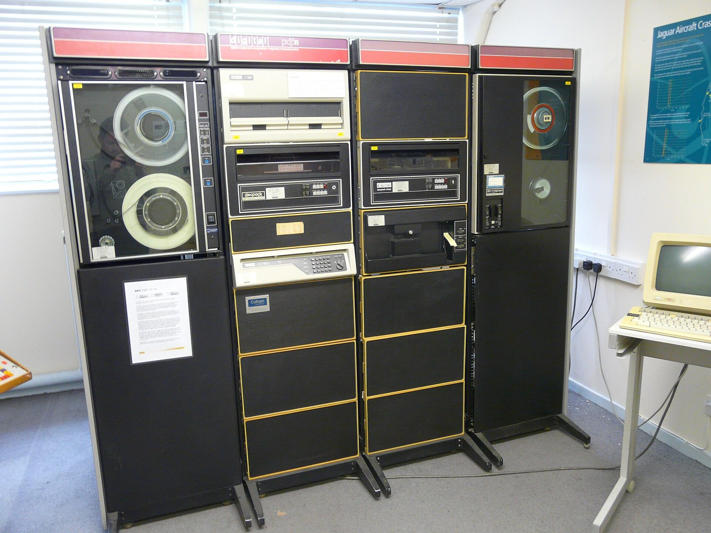
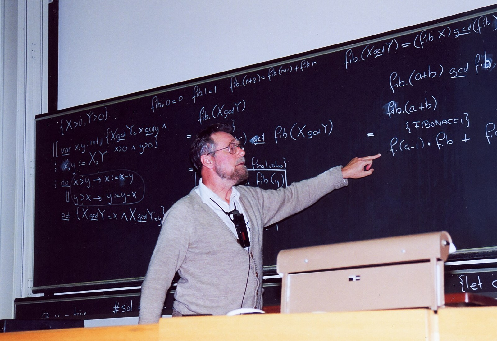
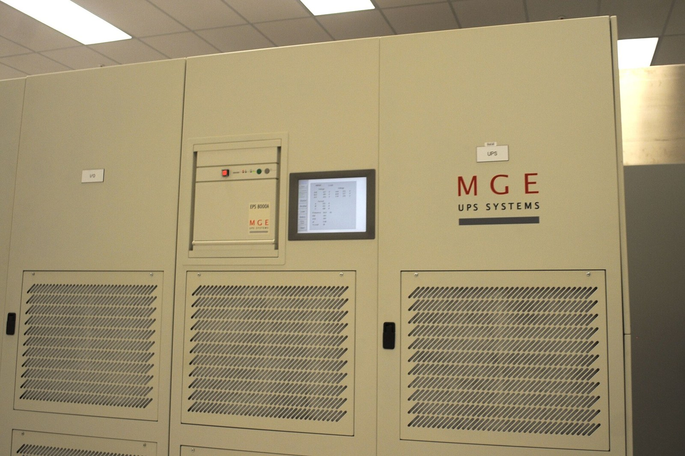

Unidad 2
Contenidos de la unidad
Diez apartados de teoría, cuatro prácticas y el examen. Los cuatro primeros son de conocer; el 2.5 es de calcular; del 2.7 en adelante, de entender cómo el sistema reparte la memoria, atiende a los dispositivos y guarda los archivos. Pulsa en cualquiera para ir directamente a él.
Resultado de aprendizaje 1 · segunda parte
Qué vas a saber hacer al terminar
Identificar los procesos y sus estados
Qué es un proceso, en qué estado está y cómo decide el planificador quién usa la CPU: FIFO, SJF, SRTF, prioridades y Round Robin.
Describir la estructura del sistema de archivos
Archivos, directorios y árbol desde la raíz; cómo se reparte el disco en bloques y quién apunta dónde está cada cosa.
Distinguir los atributos de archivos y directorios
Nombre y extensión, tamaño y tamaño en disco, fechas, propietario, oculto, solo lectura.
Reconocer los permisos de archivos y directorios
Quién puede leer, escribir y ejecutar: la pestaña Seguridad de Windows y las letras rwx de Linux.
Valorar los sistemas de archivos transaccionales
Qué es el journaling, qué pasa si se va la luz y qué sistema de archivos elegir en cada caso.
Describir la gestión de memoria
Protección, paginación y segmentación, fragmentación, intercambio y memoria virtual.
Distinguir cómo se controla la entrada/salida
Por programa, por interrupciones y por acceso directo a memoria; caché, buffer y spool.
Conocer los sistemas multiprocesador y distribuidos
Varios procesadores en un equipo y varios equipos que trabajan como uno.
Concepto clave
Sistema operativo
Conjunto de programas que se cargan al arrancar el ordenador y hacen de intermediario entre el hardware y los demás programas: gestionan los recursos y ocultan al usuario los detalles de la máquina.
Es software de base: sin él, el hardware no hace nada útil y ningún programa puede ejecutarse.
Sistema operativo. m. Inform. Programa o conjunto de programas que efectúan la gestión de los procesos básicos de un sistema informático, y permite la normal ejecución del resto de las operaciones. Real Academia Española, Diccionario de la lengua española, entrada sistema.
Concepto y funciones
Dónde está el sistema operativo
Entre el hardware y todo lo demás. Cada capa solo habla con la que tiene justo debajo:
- ●El usuario usa las aplicaciones (y a veces el propio sistema: el Explorador, la Configuración, la terminal).
- ●Las aplicaciones piden servicios al sistema operativo: abrir un archivo, dibujar una ventana, enviar por la red.
- ●El sistema operativo gobierna el hardware con los controladores (drivers) y reparte los recursos.
- ●El hardware ejecuta instrucciones y mueve bits: no sabe nada de ventanas ni de archivos.
Figura 2.1. El sistema operativo como capa intermedia. Elaboración propia.
Concepto y funciones
Las cinco funciones del sistema operativo
Tabla 2.1. Las funciones principales de un sistema operativo. La primera es la más importante y ocupa la mayor parte de esta unidad: gestión de procesos (2.5), de memoria (2.7), de entrada/salida (2.9) y de archivos (2.10).

Pregunta a la clase
¿Hace algo más? Pensad en el móvil
Android e iOS son sistemas operativos. ¿Qué cosas hace vuestro móvil que no están en la tabla de las cinco funciones?
Lo que suele salir, y dónde encaja
Seguridad: controlar quién accede a qué.
Energía: reparto de recursos pensando en la batería.
Interfaz: otra forma de ocultar el hardware (función 2).
Ejecutar y controlar programas (función 3): instalar, actualizar, aislar.
Gestión de archivos (función 4).
Tratamiento de errores (función 5): se cierra ella, no el móvil.
Todo encaja en las cinco funciones, pero hoy dos de ellas pesan más que nunca: la seguridad (sección 2.11) y la energía.
Concepto y funciones
Dos formas de usarlo: modo orden y modo gráfico
Windows 11 · Terminal
C:\Users\ana> dir /b Documentos
examen.docx fotos presupuesto.xlsx
C:\Users\ana> copy Documentos\examen.docx E:\
1 archivo(s) copiado(s).
Ubuntu · Terminal
ana@aula:~$ ls -l Documentos
-rw-r--r-- 1 ana ana 48120 sep 12 10:04 examen.docx
ana@aula:~$ cp Documentos/examen.docx /media/ana/USB/
Modo orden (texto, línea de comandos, terminal)
Se escriben órdenes. Hay que saberlas, pero se pueden guardar en un archivo y repetir, funcionan a distancia y no gastan recursos. Fue la primera interfaz: CP/M, MS-DOS, UNIX.
Modo gráfico (GUI: ventanas, iconos, menús, puntero)
Se descubre mirando: no hay que memorizar nada. Llegó después (Macintosh 1984, Windows 1985) y las primeras versiones de Windows eran un programa que corría sobre MS-DOS.
Todos los sistemas actuales tienen las dos: en Windows 11, botón derecho en Inicio y Terminal; en Ubuntu, Ctrl + Alt + T. Maquetas de elaboración propia.
Concepto y funciones
Los sistemas operativos de 2026
Cuota en ordenadores de escritorio, agosto de 2026
En España: Windows 70,2 %, macOS 20,6 %, Linux 6,5 %, ChromeOS 2,7 %.
Fuente: StatCounter Global Stats, cuota mundial de sistemas operativos de escritorio, agosto de 2026. Estimación a partir de visitas a páginas web.
Tabla 2.2. Sistemas operativos actuales por tipo de dispositivo. Por número de aparatos, el sistema más extendido del mundo es Linux: está en Android, en la mayoría de los servidores, en routers, televisores y superordenadores.
¿Cuál de estas NO es una función del sistema operativo?
Selecciona una opción.
Evolución histórica
Los primeros sistemas operativos
La historia del sistema operativo va a la par que la del hardware. Las tres primeras generaciones de la UT1 son también las tres primeras del sistema operativo.
1.ª generación · sin sistema operativo
Mark I y ENIAC se programaban con interruptores y cables; el operador cargaba cada trabajo a mano. A mediados de los 50 aparecen los primeros monitores que encadenan trabajos: GM-NAA I/O (1956) para el IBM 704 y, después, la familia EXEC de Univac.
2.ª generación · procesamiento por lotes
Los trabajos entran en tarjetas perforadas o cinta y se ejecutan uno tras otro (EXEC II, 1962). En 1961 el CTSS del MIT estrena el tiempo compartido: varios usuarios a la vez desde terminales.
3.ª generación · familias y multiprogramación
La serie IBM 360 (1964) es la primera familia de ordenadores compatibles, con OS/360. Los PDP de DEC llevan TOPS-10. MULTICS (1965: MIT, General Electric y Bell Labs) es el proyecto del que nace UNIX en 1969.



Evolución histórica
Los sistemas operativos por generaciones
Tabla 2.3. Sistemas operativos por generación. Los años son los de la primera versión y varían un poco según la fuente. Cada generación hereda ideas de la anterior: el tiempo compartido de CTSS está en tu móvil.
Evolución histórica
Setenta años de sistemas operativos
Figura 2.5. Línea de tiempo de los sistemas operativos, 1956-2026. Elaboración propia. Desde el IBM PC (1981) hasta hoy han pasado más años que desde el primer sistema operativo hasta el IBM PC.
Evolución histórica
La familia Unix
Figura 2.6. Árbol simplificado de la familia Unix. MINIX no es un Unix: es un sistema nuevo que imita a Unix y que inspiró a Linux. Elaboración propia.

1969. Ken Thompson y Dennis Ritchie (Bell Labs) escriben UNIX para un PDP. En 1973 lo reescriben en C: por primera vez un sistema operativo se puede llevar a otra máquina sin rehacerlo.
1991. Linus Torvalds, estudiante en Helsinki, publica Linux, un núcleo nuevo escrito desde cero inspirado en MINIX. Con las herramientas del proyecto GNU forma el sistema que hoy está en Android, en la nube y en Ubuntu.
Evolución histórica
De CP/M a Windows 11
CP/M (1974) y los micros de 8 bits
Gary Kildall (Digital Research) crea el sistema estándar de los primeros microordenadores. Modo texto, disquetes, un programa cada vez.
PC-DOS y MS-DOS (1981)
El IBM PC sale con PC-DOS, muy parecido a CP/M. Microsoft lo vende a los fabricantes de clónicos como MS-DOS. Competidores: DR-DOS, OS/2.
Windows 1.0 a 3.11 (1985-1993): un programa sobre MS-DOS
Interfaz gráfica que se arrancaba desde DOS. No era todavía un sistema operativo completo.
Windows 95, 98 y Me: ya independientes
Se instalan solos, con multitarea apropiativa y el menú Inicio. Todavía con DOS debajo.
Windows NT (1993): un sistema nuevo
Escrito desde cero para empresas. XP (2001) une las dos ramas y desde entonces todo es NT: Vista, 7, 8, 10, 11 y Windows Server.
La rama NT, la que usas hoy
Windows 10 dejó de recibir actualizaciones de seguridad el 14 de octubre de 2025. Un sistema sin soporte es un riesgo: enlaza con la práctica 1.5.
Curiosidad: los que no se van
OS/400 (IBM, 1988), hoy llamado IBM i, sigue en producción en bancos, aseguradoras y logística. VMS (1977) sobrevive como OpenVMS, portado a procesadores x86 en 2020. Un sistema operativo puede vivir cuarenta años si hace bien su trabajo.
Pregunta a la clase
¿Cuántos sistemas operativos hay ahora mismo en esta aula?
Contad todo lo que tenga un procesador y un programa dentro. No solo los ordenadores.
Lo que hay en un aula normal
Por número de aparatos, el sistema operativo más extendido del mundo es Linux: está dentro de Android, de la mayoría de los servidores de internet, de routers, televisores y superordenadores. Por ordenadores de escritorio, Windows.
¿Qué sistema operativo fue el precursor directo de UNIX?
Selecciona una opción.
Tipos de sistemas operativos
Cinco criterios para clasificarlos
Se clasifican por cómo administran los recursos y cómo dan servicio a los usuarios. Un sistema operativo intenta siempre que el tiempo de respuesta de cada proceso sea el menor posible.
- 1Tiempo de respuesta: por lotes, interactivos o de tiempo real.
- 2Número de usuarios: monousuario o multiusuario.
- 3Número de procesos: monotarea o multitarea.
- 4Número de procesadores: monoproceso o multiproceso (simétrico o asimétrico).
- 5Trabajo en red: centralizado, en red o distribuido.
Ejemplo: Windows 11 en tu ordenador
Un sistema se clasifica por los cinco criterios a la vez. Al final del bloque, haz lo mismo con Android y con MS-DOS.
Tipos de sistemas operativos · criterio 1
Por tiempo de respuesta
Tabla 2.4. Clasificación por tiempo de respuesta. Un sistema interactivo puede ejecutar trabajos por lotes (una copia de seguridad a las tres de la mañana), pero un sistema por lotes no puede ser interactivo.
Tipos de sistemas operativos · criterio 2
Por número de usuarios
Monousuario
Un solo usuario cada vez, con todos los recursos para él.
- ●MS-DOS, Windows 95 y 98: ni siquiera tenían cuentas de verdad.
- ●El móvil, en la práctica: una persona a la vez, aunque admita varios perfiles.
- ●No importa cuántos procesos ni procesadores tenga: el criterio es cuántas personas trabajan a la vez.
Multiusuario
Varios usuarios simultáneamente, repartiéndose los recursos.
- ●UNIX y Linux desde el principio: veinte personas conectadas por terminal o por SSH al mismo equipo.
- ●Windows Server con Escritorio remoto: varios escritorios a la vez en la misma máquina.
- ●Windows 11: varias cuentas y varias sesiones abiertas con cambio rápido de usuario, pero solo una en pantalla. Está en el límite.
La palabra clave es simultáneamente. Tener varias cuentas dadas de alta no basta: si no pueden trabajar a la vez, no es multiusuario.
Tipos de sistemas operativos · criterio 3
Por número de procesos
Monotarea · monoprogramación
Un solo programa cada vez. Tiene la CPU entera hasta que termina; entonces entra el siguiente.
- ●MS-DOS: para usar otro programa había que salir del que estabas usando.
- ●Muchos sistemas empotrados sencillos siguen así: un microondas ejecuta un solo programa.
Multitarea · multiprogramación
Varios programas a la vez. Con un procesador se turnan tan deprisa que parecen simultáneos; con varios núcleos, algunos lo son de verdad.
- ●Cooperativa (Windows 3.x, Mac OS clásico): cada programa cedía la CPU cuando quería. Uno colgado colgaba todo.
- ●Apropiativa (desde Windows 95 y NT; Linux, macOS, Android): el sistema se la quita. Un programa que no responde no bloquea a los demás.
Cómo se reparte la CPU entre los procesos es la planificación, sección 2.5. "Apropiativa" es lo mismo que "expulsiva": el sistema puede quitarle el procesador a un proceso.
Tipos de sistemas operativos · criterio 4
Por número de procesadores
Monoproceso
Solo sabe trabajar con un procesador, aunque el equipo tenga más.
- ●Los sistemas antiguos y muchos empotrados.
- ●Un sistema monotarea sobre un superordenador de miles de núcleos usaría uno: el hardware no basta, el sistema tiene que saber aprovecharlo.
Multiproceso
Usa varios procesadores o núcleos a la vez: varios procesos (o varios hilos del mismo) se ejecutan de verdad simultáneamente.
- ●Simétrico (SMP): cualquier tarea va a cualquier núcleo libre. Windows, Linux, macOS, Android: todos los sistemas actuales.
- ●Asimétrico: un procesador maestro reparte el trabajo a los demás. Sistemas antiguos.
- ●Hoy: núcleos de rendimiento y de eficiencia en el mismo chip (Intel desde la 12.ª generación, ARM big.LITTLE en los móviles). Sigue siendo simétrico, pero el planificador elige qué va a cada tipo de núcleo.
En la UT1 miraste cuántos núcleos e hilos tiene tu procesador. Que el sistema los use todos es lo que hace posible que un juego, el navegador y una descarga no se estorben.
Tipos de sistemas operativos · criterio 5
Por trabajo en red
Tabla 2.5. Clasificación por trabajo en red. Multiprocesador (varios procesadores en un equipo) y distribuido (varios equipos que trabajan como uno) son dos formas de repartir el trabajo: una dentro de la caja y otra por la red.
Un marcapasos lleva un sistema operativo de tipo…
Selecciona una opción.
Estructura del sistema operativo
Modo usuario, modo núcleo y llamadas al sistema
El procesador tiene dos modos de trabajo. En modo núcleo (kernel) se puede todo; en modo usuario las instrucciones que tocan el hardware están prohibidas.
- ●Los programas corren en modo usuario. Cuando necesitan algo del hardware, hacen una llamada al sistema.
- ●El procesador pasa a modo núcleo, el sistema operativo hace el trabajo (comprueba permisos, habla con el disco) y devuelve el resultado.
- ●Guardar un archivo: WriteFile en Windows, write en Linux. Un programa hace miles de llamadas por segundo.
- ●Por eso un programa no puede colgar el equipo. Un controlador (driver) corre en modo núcleo y sí puede: es la pantalla azul.
Figura 2.7. Una llamada al sistema. Elaboración propia.
Estructura del sistema operativo
Monolítico frente a capas
Monolítico
Un solo programa grande con todas las funciones entrelazadas.
- ●Rápido: todo se llama directamente.
- ●Difícil de modificar y de buscar errores: tocar una parte afecta a las demás.
- ●Linux es monolítico, pero con módulos que se cargan y descargan (drivers, sistemas de archivos). La orden lsmod los lista.
En niveles o capas
Cada nivel tiene una función clara y solo habla con los niveles adyacentes.
- ●Ordenado y fácil de entender: se puede cambiar un nivel sin tocar el resto.
- ●Más lento: una petición atraviesa varios niveles.
- ●THE (Dijkstra, 1968) fue el primero, con fines didácticos. MINIX (Tanenbaum, 1987) también va por niveles.
Los sistemas reales mezclan: un núcleo monolítico o híbrido y, por encima, capas de servicios y aplicaciones. Las dos tablas siguientes muestran los niveles de THE y de MINIX.

Figura 2.8. Edsger Dijkstra (1930-2002), autor del sistema THE y de algoritmos que usa cualquier GPS. Clic para ampliar.
Estructura del sistema operativo
Dos sistemas por niveles: THE y MINIX
Tabla 2.6. Niveles del sistema THE (Technische Hogeschool Eindhoven). Sistema didáctico: nunca fue comercial.
Tabla 2.7. Niveles de MINIX. Solo el nivel 1 corre en modo núcleo: es un micronúcleo. MINIX 3 sigue disponible en minix3.org.
En los dos, el nivel de abajo es el único que toca el hardware y el de arriba es donde trabaja el usuario. Cada petición baja nivel a nivel y la respuesta sube.
Estructura del sistema operativo
Micronúcleo e híbrido
Micronúcleo
El núcleo hace lo mínimo: procesos, memoria básica y paso de mensajes. Todo lo demás (drivers, sistema de archivos, red) son servicios que corren en modo usuario y se pueden reiniciar si fallan, sin tumbar el sistema. Más robusto, algo más lento. MINIX 3, QNX (coches, equipos médicos).
Híbrido
Un núcleo grande que corre entero en modo núcleo, como un monolítico, pero organizado por dentro como un conjunto de servicios. Es lo que usan Windows NT y sus sucesores (2000, XP, 7, 10, 11) y macOS (su núcleo XNU junta el micronúcleo Mach con partes de BSD).
Curiosidad. Desde 2015 los procesadores de Intel llevan dentro un pequeño ordenador de gestión (Management Engine) que ejecuta MINIX 3. Al enterarse, Tanenbaum publicó en 2017 una carta abierta a Intel: MINIX podría ser el sistema operativo más instalado del mundo, y nadie se lo había dicho.
Figura 2.9. Andrew S. Tanenbaum, autor de MINIX y de los manuales de sistemas operativos más usados en las universidades. Clic para ampliar.
Estructura del sistema operativo
Windows 11 por dentro
Núcleo híbrido. Todo lo que está en la mitad inferior corre en modo núcleo; lo de arriba, en modo usuario.
- ●Servicios: procesos del sistema sin ventana que arrancan solos (Windows Update, cola de impresión, Defender). Se ven en services.msc.
- ●Ejecutivo: los gestores de procesos, memoria, E/S, archivos y seguridad. Es la parte grande del núcleo.
- ●Núcleo: planificador, interrupciones, cambio de contexto.
- ●HAL (capa de abstracción del hardware): oculta las diferencias entre placas y procesadores para que el resto no cambie.
Figura 2.10. Arquitectura simplificada de Windows NT, la base de Windows 11 y de Windows Server. Elaboración propia a partir de la documentación de Microsoft.
Estructura del sistema operativo
Linux por dentro
Núcleo monolítico con módulos. Las mismas piezas que en Windows, con otra organización.
- ●Shell: la terminal (bash) es un programa más, en modo usuario, que lanza otros programas.
- ●Biblioteca C: los programas no hacen las llamadas al sistema a pelo; llaman a funciones de glibc que las envuelven.
- ●VFS, sistema de archivos virtual: hace que ext4, NTFS o un pendrive FAT se vean iguales desde arriba.
- ●Módulos: drivers y sistemas de archivos que se cargan solo si hacen falta. El mismo núcleo sirve para Ubuntu, Android y un router.
Figura 2.11. Arquitectura simplificada de Linux. En rigor, Linux es solo el núcleo; el sistema completo lleva las herramientas GNU y un escritorio. Elaboración propia.
Estructura del sistema operativo
Otras dos estructuras: máquina virtual y cliente-servidor
Máquina virtual
El sistema presenta a cada usuario o proceso una máquina que parece idéntica a la real, y sobre ella se puede instalar otro sistema operativo.
- ●VM/CMS de IBM (1972): cada usuario del mainframe creía tener un ordenador para él solo.
- ●Hoy es lo que hacen los hipervisores: VirtualBox, VMware, Hyper-V. Varios sistemas operativos en el mismo equipo, cada uno en su máquina virtual.
- ●Es la UT3 entera: allí instalarás Ubuntu y Windows dentro de máquinas virtuales.
Cliente-servidor
Los procesos del sistema operativo son servidores que atienden peticiones; los programas de usuario son clientes que las envían.
- ●Es el modelo natural de los micronúcleos: el servidor de archivos, el de memoria, el de red, cada uno un proceso.
- ●Funciona igual dentro de un equipo o a través de la red: el cliente no sabe si el servidor está en la misma máquina. De ahí a los sistemas distribuidos hay un paso.
- ●Lo verás en Sistemas Operativos en Red y en Redes locales: un servidor de archivos, de impresión, web.
Las estructuras no son excluyentes: Windows es híbrido, se organiza como cliente-servidor por dentro y, con Hyper-V, hace de máquina virtual.
¿Qué tipo de núcleo tiene Linux?
Selecciona una opción.
Concepto clave
Proceso
Un programa en ejecución. El programa es un archivo guardado en el disco; el proceso es ese programa cargado en memoria, con sus datos, su estado y su turno de procesador.
- ●Cada vez que ejecutas un programa se crea un proceso. El mismo programa abierto dos veces son dos procesos.
- ●Un programa puede crear varios procesos: el navegador abre uno por pestaña. Con Mayús + Esc en Chrome o Edge se ven todos.
- ●El sistema operativo los identifica, les da memoria, les da turno en la CPU y los elimina al terminar: es la gestión de procesos.
Procesos y planificación
La ficha de cada proceso: el bloque de control (PCB)
Procesos del sistema y de usuario
Del sistema: arrancan con el equipo y dan servicio sin ventana. Son los servicios (o demonios en Linux): cola de impresión, Windows Update, Defender, el servidor SSH. Se administran en services.msc y con systemd.
De usuario: los que lanzas tú. En un sistema multiusuario conviven procesos de varias personas.
Dos servicios especiales: arranque, que deja el sistema listo para los usuarios, y parada, que lo deja de modo que pueda volver a arrancar sin problemas.
Tabla 2.8. Contenido del bloque de control del proceso. Cada sistema operativo guarda más o menos campos, pero el PID, el estado, la prioridad y los registros están en todos.
Procesos y planificación
Hilos, sincronización e interbloqueo
Hilos (threads, subprocesos)
Un proceso tiene al menos un hilo. Varios hilos del mismo proceso comparten su memoria y pueden ejecutarse a la vez en distintos núcleos. Un juego: un hilo dibuja, otro calcula la física, otro reproduce el sonido. En el Administrador de tareas, columna Subprocesos.
Sincronización
Dos hilos no pueden tocar el mismo dato a la vez: dos cajeros que restan del mismo saldo lo dejan mal. El sistema ofrece cerrojos: uno entra, el otro espera.
Interbloqueo (deadlock)
A tiene el recurso 1 y espera el 2. B tiene el 2 y espera el 1. Ninguno soltará lo suyo hasta conseguir lo del otro: los dos esperan para siempre.
Como dos coches de frente en un puente de un carril. El sistema lo evita (obliga a pedir los recursos en orden) o lo detecta y mata a uno. Tú lo ves como un programa que "no responde".
Procesos y planificación
Tres estados y cuatro transiciones
- 1Ejecución → bloqueado. El proceso pide algo y tiene que esperar: leer del disco, una tecla, un dato de la red. Es la única que inicia el propio proceso.
- 2Ejecución → listo. El sistema le quita la CPU sin que haya terminado: agotó su tiempo o llegó uno más urgente.
- 3Listo → ejecución. El planificador lo elige y entra en la CPU.
- 4Bloqueado → listo. Llega lo que esperaba. Va al final de la cola de listos: nunca directo a ejecución, porque la CPU estará ocupada.
Figura 2.12. Estados de un proceso y sus transiciones. Con un solo núcleo, solo un proceso puede estar en ejecución; los demás están listos o bloqueados. Elaboración propia.
¿De qué estado a qué estado?
Lee lo que le pasa al proceso y pulsa los selectores hasta que muestren el estado de origen y el de destino. Después, el número de la transición en la figura.
Pista rellena la siguiente casilla y te explica por qué. Resolver lo completa todo. Las dos ponen a cero tu racha: en la práctica 2.6 hay que llegar a diez seguidos.
Procesos y planificación
El planificador: quién entra en la CPU
En un sistema multitarea los procesos parecen ejecutarse a la vez, pero cada núcleo solo puede atender a uno. El planificador (scheduler) es el proceso del sistema que decide cuál de los listos pasa a ejecutarse. A la forma de repartir la CPU se le llama planificación.
Tres plazos: a largo plazo decide qué trabajos se admiten; a medio plazo, cuáles se sacan a disco cuando falta memoria; a corto plazo (el dispatcher), quién entra ahora en la CPU. Es este último el que estudiamos.
Lo que intenta el planificador
- ●Que la CPU no esté nunca parada mientras haya algo que hacer.
- ●Que el tiempo de respuesta de cada proceso sea el menor posible.
- ●Que ningún proceso espere para siempre (inanición), aunque haya otros más prioritarios.
- ●Tratar a todos por igual, salvo que tengan distinta prioridad.
Envejecimiento (aging): cuanto más tiempo lleva un proceso esperando, más prioridad gana. Así los muy prioritarios no dejan sin turno a los demás.
Procesos y planificación
Planificación expulsiva y no expulsiva
No expulsiva · non-preemptive
El proceso deja la CPU solo cuando termina o se bloquea esperando un recurso. Nadie se la quita.
Algoritmos: FIFO, SJF, prioridades no expulsivo.
Expulsiva · preemptive
El sistema puede desalojar al proceso sin que haya terminado, y lo devuelve a la cola de listos. Es la multitarea apropiativa de la sección 2.3.
Algoritmos: SRTF, prioridades expulsivo, Round Robin.
Cambio de
contexto
Desalojar un proceso para que entre otro: guardar el PCB del que sale (registros, contador de programa) y cargar el del que entra, para que siga exactamente donde lo dejó. Es caro: microsegundos sin trabajo útil y las cachés del procesador llenas de datos del proceso anterior. Cuantos más cambios, menos rendimiento: por eso el quantum de Round Robin no puede ser minúsculo.
Procesos y planificación
Los datos de un problema de planificación
Tabla 2.9. Entradas y salidas de un problema de planificación. Las salidas se leen del cronograma.
El cronograma (diagrama de Gantt)
Una fila por proceso y una casilla por unidad de tiempo. Se colorea cuando el proceso está en la CPU y se deja en gris cuando espera. Siempre se dibuja primero y de él se leen el fin de cada proceso y, con las dos restas, sus tiempos.
El ejemplo de los seis simuladores
| Proceso | Llegada | Ejecución | Prioridad |
|---|---|---|---|
| P1 | 0 | 7 | 4 |
| P2 | 2 | 4 | 2 |
| P3 | 3 | 3 | 1 |
| P4 | 5 | 2 | 3 |
En cada simulador puedes cambiar los datos, añadir procesos o pedir otros al azar, y avanzar el tiempo paso a paso.
FIFO: primero en llegar
No expulsivo. Entran por orden de llegada y cada uno conserva la CPU hasta terminar. También se llama FCFS (first come, first served).
SJF: primero el más corto
No expulsivo. Cuando la CPU queda libre entra el de menor tiempo de ejecución de los que esperan; si empatan, el que llegó antes. Favorece a los cortos.
SRTF: el que menos le queda
Expulsivo. Entra siempre el que menos tiempo tiene pendiente, aunque haya que desalojar al que está en la CPU. Si empatan, sigue el que está.
Prioridades no expulsivo
La prioridad 1 es la más alta. Cuando la CPU queda libre entra el de mayor prioridad de los que esperan; si empatan, el que llegó antes.
Prioridades expulsivo
La prioridad 1 es la más alta. Si llega un proceso más prioritario que el que está en la CPU, lo desaloja. Si empatan, sigue el que está.
Round Robin, quantum 2
Expulsivo. Cada proceso usa la CPU como mucho un quantum y vuelve al final de la cola. Si en el mismo instante llega uno y otro agota su quantum, entra antes en la cola el que llega.
Procesos y planificación
Los seis algoritmos con el mismo ejemplo
Tabla 2.10. Los seis algoritmos con los procesos P1 (0, 7), P2 (2, 4), P3 (3, 3) y P4 (5, 2) y prioridades 4, 2, 1, 3. Las mejores medias no son siempre lo mejor: un usuario delante de la pantalla prefiere que todo avance (Round Robin) a que un proceso largo se quede parado.
Resuelve tú el cronograma
Elige el algoritmo. Escribe en la fila CPU el número del proceso que se ejecuta en cada unidad de tiempo: el cronograma se colorea solo. Después, la espera y la respuesta de cada proceso y las dos medias.
Reglas de empate: FIFO. En SRTF y prioridades expulsivo, si empatan, sigue el que está. En Round Robin, el que llega entra en la cola antes que el que agota su quantum.
Pista rellena la siguiente casilla y explica por qué. Resolver lo completa todo. Las dos ponen a cero tu racha: en la práctica 2.6 hay que llegar a diez seguidos en cada algoritmo.
Pregunta a la clase
¿Qué pasa si el quantum vale 1? ¿Y si vale 100?
Pruébalo primero en el simulador de Round Robin con q = 2 y q = 3, y piensa qué pasaría en los extremos.
q = 1
La CPU cambia de proceso en cada unidad de tiempo. Cada cambio de contexto cuesta tiempo real (guardar y cargar el PCB, vaciar cachés): el sistema pasa más tiempo cambiando que ejecutando.
q = 100
Ningún proceso agota su quantum: el primero que entra termina antes de ceder. Round Robin se convierte en FIFO y el sistema deja de responder mientras un proceso largo ocupa la CPU.
Los sistemas reales usan quantums de milisegundos y los ajustan sobre la marcha: Windows da un quantum más largo al programa de la ventana activa; Linux lo calcula según cuántos procesos compiten.
¿Cuál de estos algoritmos es expulsivo?
Selecciona una opción.
Pregunta a la clase
¿Cuántos procesos e hilos tiene ahora mismo tu ordenador?
Ctrl + Mayús + Esc › Rendimiento › CPU. Mira abajo: procesos, subprocesos, identificadores. ¿Por qué hay cientos si solo tienes dos ventanas abiertas?
Lo normal en un Windows 11 con el navegador abierto
150-300
procesos
2.000-5.000
subprocesos (hilos)
1-5 %
de CPU en reposo
- ●La mayoría son servicios del sistema y procesos en segundo plano: actualizaciones, antivirus, red, sonido, impresión.
- ●El navegador crea un proceso por pestaña y por extensión, para que una pestaña colgada no se lleve a las demás.
- ●Casi todos están bloqueados o listos, esperando algo. Solo unos pocos usan la CPU de verdad: por eso el porcentaje es tan bajo.
Un proceso bloqueado recibe el dato del disco que esperaba. ¿A qué estado pasa?
Selecciona una opción.
Planificación de procesos
En casa: llega a diez aciertos seguidos en el ejercicio de planificación con cada uno de los seis algoritmos, y en el de estados. Pista y Resolver ponen la racha a cero. No se entrega nada.
En clase: examen práctico en papel con una hoja distinta para cada alumno: cuatro cronogramas con sus tiempos de espera, de respuesta y las medias.
Hoja de ejercicios con tu número
Abre hoja.html, escribe tu número de lista y genera la hoja: sale siempre la misma para el mismo número. Hazla en papel, dibuja los cronogramas y compruébala con el solucionario. En clase, la hoja será otra.
Sin material. Los algoritmos y las dos restas (respuesta = fin − llegada; espera = respuesta − ejecución) hay que saberlos. Se puntúa el cronograma y los cálculos a la vista.
Los ejercicios (pulsa para ir a cada uno)
- 1Estados de un proceso: ¿de qué estado a qué estado?
- 2Resuelve tú el cronograma: FIFO, SJF, SRTF, prioridades (2) y Round Robin
- 3Los seis simuladores, para ver cada algoritmo paso a paso
- 4Hoja de ejercicios en papel con tu número de lista
Entrega
Nada: se demuestra en clase
En clase
Examen práctico en papel, una sesión
Cubre
Criterio f del RA1
Cuenta
Como práctica, dentro del 40 %
Gestión de memoria
Qué hace el sistema con la memoria
Un proceso tiene que estar en la memoria principal para ejecutarse. El sistema operativo hace cuatro cosas con ella:
- ●Asignar una zona a cada proceso cuando se crea.
- ●Proteger esa zona: ningún otro proceso puede leerla ni escribirla.
- ●Compartir cuando conviene: dos procesos usando la misma biblioteca no necesitan dos copias.
- ●Liberar la memoria cuando el proceso termina.
Monoprogramación
Fácil: una zona para la parte residente del sistema y el resto para el único proceso. Cuando termina, entra otro.
Multiprogramación
Hay que repartir la memoria entre varios procesos a la vez, en particiones. Aparecen los problemas de esta sección: proteger, aprovechar los huecos y qué hacer cuando no cabe.
Gestión de memoria
Protección: cada proceso en su sitio
Un proceso no puede leer ni escribir la memoria de otro ni la del sistema operativo. Si lo intenta, el procesador avisa al sistema y este lo mata.
- ●Técnica clásica: dos registros del procesador, base y límite, con la primera y la última dirección del proceso. Cada acceso se comprueba contra ellos.
- ●Hoy: la unidad de gestión de memoria (MMU) del procesador, con la paginación de la siguiente diapositiva. Cada proceso ve su propio espacio de direcciones.
- ●Funciona porque el proceso corre en modo usuario y no puede tocar esos registros (sección 2.4).
Cómo lo ves tú
Segmentation fault (core dumped)
Los dos mensajes son lo mismo: la protección de memoria ha funcionado. Cae el programa, no el sistema.
Y sin embargo… un proceso con privilegios de administrador puede pedir al sistema que le deje leer y escribir la memoria de otro. Así trabajan los depuradores. Y así funciona la práctica 2.8.
Gestión de memoria
Cómo se reparte: paginación y segmentación
Paginación · tamaño fijo
La memoria se divide en marcos de tamaño fijo (4 KiB en los PC) y cada proceso en páginas del mismo tamaño. Una tabla dice en qué marco está cada página: no tienen por qué estar seguidas.
Lo usan Windows y Linux. Desperdicia solo el final de la última página.
Segmentación · tamaño variable
El proceso se divide en segmentos de tamaño variable con sentido para el programa: código, datos, pila. Cada segmento va entero a una zona libre lo bastante grande.
Lo usaba MS-DOS (segmentos de 64 KiB). Los procesadores actuales la combinan con la paginación, pero el sistema trabaja con páginas.
Antes de ambas: particiones fijas (la memoria dividida de antemano en trozos iguales) y variables (a cada proceso, un trozo de su tamaño). Sus problemas son los de la diapositiva siguiente.
Gestión de memoria
Fragmentación: la memoria que se desaprovecha
Interna · dentro de la partición · paginación
Las páginas son de tamaño fijo, así que la última de cada proceso se queda a medias. Un proceso de 10 KiB con páginas de 4 KiB ocupa 3 páginas (12 KiB): se pierden 2 KiB dentro de la última.
Externa · fuera de las particiones · segmentación
Al entrar y salir procesos quedan huecos sueltos. Libres 3, 5 y 2 KiB: suman 10, pero un proceso de 6 KiB no cabe en ninguno. Solución: compactar (mover procesos para juntar los huecos), que es caro. La paginación no la sufre: cualquier marco vale.
Figura 2.13. Fragmentación interna y externa. Elaboración propia.
Páginas, huecos y fragmentación
Páginas: divide el tamaño del proceso entre el de la página y redondea hacia arriba; lo que sobra en la última es fragmentación interna. Huecos: el proceso solo cabe en un hueco igual o mayor que él, aunque la suma de los huecos sea suficiente.
Pista rellena la siguiente casilla y te explica por qué. Resolver lo completa todo. Las dos ponen a cero tu racha.
Gestión de memoria
Intercambio, reubicación y compartición
Intercambio · swapping
Un proceso suspendido (agotó su tiempo o espera un recurso) se saca al disco para que otro use su memoria. Cuando le toca, se vuelve a cargar.
Windows: C:\pagefile.sys (y swapfile.sys), ocultos y de sistema.
Linux: una partición swap o el archivo /swapfile.
El disco es miles de veces más lento que la RAM: cuando el sistema intercambia mucho, el equipo se arrastra.
Reubicación
Cuando un proceso vuelve del disco no tiene por qué ir a la misma zona de memoria: se puede colocar en otra partición distinta.
Con paginación es automático: las direcciones del proceso pasan por la tabla de páginas, así que da igual en qué marcos esté.
Compartición
Dos procesos que usan el mismo código (una biblioteca) comparten una sola copia en memoria en vez de cargarla dos veces. De forma muy controlada: solo lectura.
Las DLL de Windows y los .so de Linux. Por eso diez pestañas del navegador no ocupan diez veces la memoria.
Gestión de memoria
Memoria virtual: ejecutar más de lo que cabe
En la RAM solo está la parte de cada proceso que se está usando. El resto espera en el disco y se trae cuando hace falta. Cada proceso cree tener toda la memoria para él.
- ●Permite ejecutar un programa más grande que la RAM, o muchos programas a la vez.
- ●Fallo de página: el proceso toca una página que está en disco; el sistema la trae a un marco libre. Si no hay libres, hay que sustituir una: la más antigua (FIFO) o la que lleva más tiempo sin usarse (LRU), que acierta más.
- ●Con 32 bits solo hay 4 GiB de direcciones (UT1). Con 64 bits, el espacio virtual de un proceso es muchísimo mayor que la RAM real.
Administrador de tareas › Rendimiento › Memoria
Cuando se agota. El sistema intercambia sin parar y el disco trabaja al 100 %: el equipo se arrastra. Si tampoco queda archivo de paginación, Windows avisa de que se está quedando sin memoria y empieza a cerrar programas. La solución barata es más RAM.
Gestión de memoria
La jerarquía de almacenamiento
Cuanto más arriba, más rápido, más caro y más pequeño. Cada nivel guarda copias de lo más usado del nivel de abajo.
- ●Caché: si se acaba de usar un dato, es probable que se vuelva a usar él o sus vecinos (localidad). Por eso se copian en un nivel más rápido.
- ●La caché de disco es una zona de la RAM con lo último leído o escrito del disco: por eso la segunda vez que abres un programa tarda menos.
- ●La memoria auxiliar (SSD, disco duro, pendrive, nube) es la única que conserva los datos al apagar.
Figura 2.14. Jerarquía de almacenamiento con tiempos de acceso y tamaños orientativos de un PC de 2026. Elaboración propia.
Pregunta a la clase
¿Puede un programa leer o cambiar la memoria de otro?
Acabamos de ver que la protección de memoria lo impide. ¿Siempre? ¿Cómo hace entonces un programa de trampas para cambiar las vidas de un juego?
En general no. Salvo que tenga privilegios
- ●Un proceso con privilegios de depuración (los que da ser administrador) puede pedir al sistema operativo acceso a la memoria de otro, y el sistema se lo concede: es lo que necesitan los depuradores para encontrar errores en los programas.
- ●Cheat Engine usa exactamente eso: busca en la memoria del juego el número que ves en pantalla (dinero, vidas), lo localiza y lo cambia.
- ●Los juegos en línea llevan sistemas anti-trampas que vigilan quién abre su memoria y expulsan al jugador. En un juego para uno solo y sin conexión no hay a quién engañar.
Moraleja: dar permisos de administrador a un programa es darle acceso a todo, también a la memoria de los demás. Pedirlos no es un trámite.
Gestión de memoria · demostración en clase
Cambiar la memoria de un juego
Un juego en el navegador
Se juega hasta tener un marcador visible: dinero, puntos, vidas. Ese número está en algún sitio de la memoria de la pestaña.
Mayús + Esc: el PID de la pestaña
El administrador de tareas del navegador muestra un proceso por pestaña con su ID, en decimal.
De decimal a hexadecimal
Cheat Engine lista los procesos por su PID en hexadecimal. Se convierte a mano (UT1) y se comprueba con la calculadora en modo programador.
Buscar el valor y acotar
Se elige el proceso, se busca el número del marcador (4 bytes): salen cientos de direcciones. Se juega para que cambie, se busca el nuevo valor y se repite hasta quedarse con una.
Cambiar el valor
Se escribe otro número en esa dirección y el juego lo muestra al instante: se ha escrito en la memoria de otro proceso.
Lo que está pasando por dentro
- ●Cheat Engine pide al sistema, con privilegios de administrador, abrir la memoria del proceso del juego. El sistema comprueba los permisos y lo concede.
- ●La memoria del proceso es enorme: la primera búsqueda encuentra ese número en cientos de sitios. Cada nueva búsqueda descarta los que ya no coinciden.
- ●La dirección que queda es la casilla exacta donde el juego guarda el marcador. Es la misma idea que las direcciones de memoria de la UT1.
Aviso. Cheat Engine necesita permisos de administrador y el antivirus suele avisar de su instalador: descárgalo solo de su web oficial. En juegos en línea es trampa y se detecta; aquí se usa con un juego para uno solo, sin conexión, para entender cómo se protege la memoria.
¿Dónde guarda Windows la memoria de intercambio?
Selecciona una opción.
La memoria de un proceso
Repite la demostración con tus manos: localiza el marcador de un juego en la memoria de su proceso y cámbialo. Individual, en clase, en una sesión.
- 1.Abre un juego para un solo jugador en el navegador y consigue un marcador.
- 2.Mayús + Esc: anota el PID de la pestaña (decimal).
- 3.Conviértelo a hexadecimal a mano y compruébalo con la calculadora en modo programador.
- 4.En Cheat Engine, elige el proceso por su PID, busca el marcador (4 bytes) y acota con varias búsquedas hasta una dirección.
- 5.Cambia el valor, compruébalo en el juego y haz una captura del antes y otra del después.
Entrega
En clase: dos capturas y las respuestas por escrito
Defensa
Una pregunta oral del profesor
Cubre
Criterio l del RA1 y repaso de bases (UT1)
Cuenta
Como práctica, dentro del 40 %
Responde por escrito
- a¿Qué es el PID y por qué el navegador y Cheat Engine lo muestran con números distintos?
- b¿Por qué el sistema operativo ha dejado que un proceso escriba en la memoria de otro?
- c¿En qué juegos sería una trampa detectable y quién la detectaría?
- d¿Qué tiene que ver con la protección de memoria y con los modos usuario y núcleo?
Se puntúa el proceso completo, las respuestas y el vocabulario: proceso, PID, dirección, protección, privilegios. Si en el aula no se puede instalar Cheat Engine, la práctica se hace en la UT3 dentro de una máquina virtual.
Gestión de entrada/salida
Dispositivos, controladores y drivers
El sistema operativo gestiona los periféricos y las memorias auxiliares para que el usuario y los programas los usen sin conocer sus detalles. Tres piezas:
- ●El dispositivo: el teclado, el disco, la tarjeta de red, la impresora.
- ●El controlador de E/S (hardware): el circuito que lo gobierna, en la placa, en una tarjeta o dentro del propio aparato. El sistema le da órdenes y le lee el estado a través de direcciones de E/S.
- ●El driver (software): la parte del sistema operativo que sabe hablar con ese controlador concreto. También se le llama "controlador", de ahí la confusión.
Dónde lo ves. Administrador de dispositivos: cada dispositivo y, en Propiedades › Controlador, su driver y su versión. Windows Update y Ubuntu traen drivers para casi todo; el resto lo pone el fabricante.
Por qué importa. El driver corre en modo núcleo: un driver con errores tumba el sistema entero. La mayoría de las pantallas azules son drivers.
Gestión de entrada/salida
Tres formas de controlar la entrada/salida
Por programa · sondeo, PIO
El procesador pregunta una y otra vez al controlador: "¿has terminado?". Mientras, no hace otra cosa.
Por interrupciones · IRQ
El procesador se olvida del dispositivo. Cuando este tiene algo, envía una señal, la petición de interrupción (IRQ). El procesador para, ejecuta la rutina de atención del driver y vuelve a lo suyo.
Acceso directo a memoria · DMA
Para transferir mucho: el controlador lee y escribe la memoria por su cuenta por unas líneas especiales (DRQ), sin pasar por el procesador, y solo interrumpe al terminar.
Verlo en tu equipo. Administrador de dispositivos › Ver › Recursos por tipo › Petición de interrupción (IRQ): la lista de dispositivos y el número de interrupción de cada uno. Es el apartado 6 de la práctica 2.13.
Gestión de entrada/salida
Que lo lento no frene lo rápido: caché, buffer y spool
Tabla 2.11. Tres técnicas para mejorar el rendimiento de la entrada/salida. Las tres usan memoria como intermediaria; cambia quién espera a quién. La cola de impresión se administra en la UT7 (Linux) y la UT10 (Windows).
Gestión de entrada/salida
Planificación de la E/S y caché de disco
Igual que planifica la CPU, el sistema planifica el disco: las peticiones se encolan y se atienden en el orden que más conviene, no en el que llegan.
- ●Disco duro: se ordenan por la posición del cabezal, como un ascensor que atiende las plantas en orden en vez de ir y venir (algoritmo del ascensor).
- ●SSD: no hay cabezal, pero se mantienen varias peticiones en vuelo a la vez (colas de órdenes, NCQ) para aprovechar su paralelismo.
Caché de escritura
El sistema no escribe en el disco al instante: apunta en memoria y escribe más tarde, agrupando varias escrituras en una. Más rápido para ti, pero durante unos segundos el dato solo está en la RAM.
- ●Por eso existe "Quitar hardware con seguridad": vacía la caché antes de desconectar un disco externo.
- ●Por eso apagar del botón puede dejar un archivo a medias: lo que estaba en la caché no llegó al disco.
- ●Lo que pasa entonces con el sistema de archivos, y cómo se protege, es el journaling de la sección 2.10.
Pregunta a la clase
¿Por qué el ratón no consume CPU aunque lo muevas sin parar?
Abre el Administrador de tareas y agita el ratón. La CPU apenas se mueve. Y sin embargo el procesador se entera de cada milímetro.
Porque funciona por interrupciones
- ●El sensor del ratón envía su posición entre 125 y 1.000 veces por segundo. Cada envío es una interrupción.
- ●El procesador la atiende en microsegundos: lee dos números, actualiza el puntero y vuelve a lo que estaba haciendo. El resto del tiempo ni se acuerda del ratón.
- ●Si funcionara por sondeo, un núcleo entero estaría preguntando "¿te has movido?" millones de veces por segundo.
En cambio, un vídeo en 4K sí gasta CPU o GPU: hay que descomprimir millones de píxeles por segundo. Eso no es entrada/salida, es cálculo. La interrupción es una de las señales del bus de control que viste en la UT1.
¿Qué técnica evita que la impresora bloquee al programa que imprime?
Selecciona una opción.
Concepto clave
Archivo y directorio
Un archivo (o fichero) es la unidad lógica de almacenamiento: un conjunto de información con nombre. Un directorio (o carpeta) es un archivo especial que contiene la lista de otros archivos y directorios.
Estructura jerárquica: un árbol desde la raíz
Windows: una raíz por unidad
C:\├─ Windows\
├─ Program Files\
└─ Users\
└─ ana\
└─ Documentos\
└─ examen.docx
D:\ E:\ (otras unidades)
Linux: una sola raíz
/├─ bin/ etc/ usr/
├─ home/
│ └─ ana/
│ └─ Documentos/
│ └─ examen.docx
└─ media/ana/USB/ (el pendrive)
Ruta absoluta: desde la raíz (C:\Users\ana\Documentos\examen.docx). Ruta relativa: desde donde estás (Documentos\examen.docx). En Linux la barra va al revés y todo, hasta el pendrive, cuelga de /.
Archivos y sistemas de archivos
Nombre, extensión y comodines
La extensión: lo que va tras el último punto
Dice de qué tipo es el archivo y con qué programa se abre: examen.docx, foto.jpg, instalar.exe. Windows la oculta por defecto; Linux ni la necesita: mira el contenido.
El truco de siempre. Con la extensión oculta, factura.pdf.exe se ve como factura.pdf y el icono se puede falsificar. Activa Ver › Mostrar › Extensiones de nombre de archivo. Es el apartado 12 de la práctica 2.13.
NTFS y FAT no distinguen: Foto.jpg y foto.jpg son el mismo. ext4 sí distingue.
\ / : * ? " < > | · En Linux, solo la barra.
Comodines: nombrar muchos archivos de una vez
| * | Cualquier cadena, incluso vacía | *.jpg · informe*.docx |
| ? | Un solo carácter, el que sea | foto?.png · tema-0?.pdf |
| [ ] | Uno de los caracteres entre corchetes (en Linux) | foto[1-3].png |
Sirven en la búsqueda del Explorador, en la terminal (dir *.jpg, ls *.jpg) y en los scripts que harás en la UT7 y la UT10. *.* son todos los archivos.
Archivos y sistemas de archivos
Atributos: lo que el sistema sabe de cada archivo
Tabla 2.12. Atributos de un archivo. Un directorio tiene los mismos, salvo que su "contenido" es la lista de lo que hay dentro.
-rw-r--r-- 1 ana ana 48120 sep 12 11:37 Documentos/examen.docx
Maquetas de elaboración propia. Fíjate: 48.120 bytes de tamaño, 49.152 en disco (12 bloques de 4.096). En Linux, la misma información en una línea: permisos, propietario, grupo, tamaño y fecha.
Archivos y sistemas de archivos
Permisos: quién puede hacer qué
Cada archivo y cada directorio dice qué puede hacer con él cada usuario. El sistema operativo lo comprueba en cada llamada al sistema: abrir, escribir, borrar. Si no tienes permiso: "acceso denegado".
Windows (NTFS): listas de control de acceso
Para cada usuario o grupo, permitir o denegar cada acción. Se heredan de la carpeta padre. Se administran en la UT10. Maqueta de elaboración propia.
Linux: rwx para tres sujetos
drwxr-x--- 2 ana ana 4096 Documentos
ana: leer y escribir
ana: solo leer
todos los demás: solo leer
Tres permisos, r leer, w escribir y x ejecutar, para tres sujetos. En un directorio, x significa poder entrar. Se cambian con chmod, en la UT6.
Los dos modelos hacen lo mismo con distinto detalle: el de Windows es más fino; el de Linux, más simple de leer.
Archivos y sistemas de archivos
Operaciones con archivos y directorios
Dos cosas que un técnico tiene claras
Enviar a la papelera no es borrar. El archivo solo se mueve a una carpeta especial y sigue ocupando sitio hasta que la vacías.
Borrar no destruye. Solo se marcan sus bloques como libres; el contenido sigue en el disco hasta que otro archivo lo sobrescribe. Por eso se puede recuperar. Para destruir de verdad: sobrescribir o cifrar.
Tabla 2.13. Operaciones más comunes. Cada una es una llamada al sistema; en la terminal, una orden. Se practican en la UT5 (Linux) y la UT9 (Windows).
Archivos y sistemas de archivos
Cómo se organiza el disco por dentro
- ●El disco se divide en sectores (512 B o 4 KiB). El sistema de archivos los agrupa en bloques o clústeres (4 KiB por defecto): la unidad mínima que se da a un archivo. Por eso el tamaño en disco es mayor que el tamaño.
- ●El sistema de archivos apunta qué bloques tiene cada archivo y en qué orden, cuáles están libres y los atributos.
- ●FAT: una tabla con una entrada por bloque que apunta al siguiente (lista encadenada). NTFS: la tabla maestra de archivos (MFT), un registro por archivo. ext4: un inodo por archivo con sus atributos y rangos de bloques.
- ●Un archivo no tiene por qué estar seguido: fragmentación. Desfragmentar tiene sentido en un disco duro, no en un SSD.
- ●Borrar es instantáneo porque solo se toca la tabla o el inodo; los bloques quedan libres con el contenido dentro.
Figura 2.15. Un archivo repartido en bloques no contiguos y la tabla que los enlaza. Elaboración propia.
Archivos y sistemas de archivos
Los sistemas de archivos que te vas a encontrar
Tabla 2.14. Sistemas de archivos actuales. Los tamaños máximos dependen de la configuración; son los habituales. ReiserFS, popular en Linux hace veinte años, se retiró del núcleo en 2025. Un pendrive "de 64 GB" en FAT32 no admite un archivo de 5 GiB: no es el espacio, es el sistema de archivos.
Archivos y sistemas de archivos
Quién lee qué: Windows, Linux y macOS
Tabla 2.15. Compatibilidad sin instalar nada extra. Linux lee NTFS con su propio driver desde 2021; macOS lo lee pero no lo escribe; Windows no ve una partición ext4 salvo que uses el subsistema de Linux (WSL).
Archivos y sistemas de archivos
Transacciones y journaling: si se va la luz
Guardar un archivo son varias operaciones: reservar bloques, escribir el contenido, actualizar la tabla, el directorio, las fechas. Si se corta a mitad, el sistema de archivos queda incoherente: bloques ocupados que no son de nadie, entradas que apuntan a nada.
- ●Sin diario (FAT, exFAT): al arrancar hay que revisar el disco entero (chkdsk, fsck). En un disco grande, mucho rato, y lo que estaba a medias se pierde.
- ●Transacción: un grupo de operaciones que se hacen todas o ninguna. Es lo que garantiza un sistema transaccional.
- ●Journaling: antes de tocar nada se apunta en un diario lo que se va a hacer; se hace; se marca como hecho. Tras un corte, el diario dice qué estaba a medias y se repite o se deshace en segundos. NTFS, ext3 y ext4, APFS.
Cómo funciona el diario
en el diario: "voy a escribir los bloques 2, 3 y 10 de foto.jpg"
escribir de verdad bloques, tabla y directorio
marcar la transacción como completada
Si se va la luz entre 1 y 3, al arrancar el diario dice qué quedó a medias: se repite (si estaba apuntado) o se deshace. El disco vuelve a estar coherente sin revisarlo entero.
Copia al escribir (Btrfs, APFS, ReFS) va un paso más allá: nunca sobrescribe un bloque en uso, escribe uno nuevo y cambia el puntero. Permite instantáneas: volver al estado de ayer en un segundo.
Al elegir: el disco del sistema y el de trabajo, siempre con journaling. Un pendrive puede ir sin él; por eso hay que quitarlo con seguridad.
Archivos y sistemas de archivos
Cómo elegir el sistema de archivos
Cuatro preguntas, en este orden:
¿Qué sistemas y aparatos lo van a leer?
Si son varios (Windows, Mac, la tele, el coche), FAT32 o exFAT. Si es uno solo, su nativo.
¿Habrá archivos de más de 4 GiB?
Un vídeo largo, una imagen de disco. Entonces FAT32 queda descartado: exFAT.
¿Hacen falta permisos y seguridad?
Varios usuarios, datos personales, cifrado: NTFS, ext4 o APFS.
¿Es el disco del sistema o de trabajo?
Entonces journaling obligatorio: NTFS, ext4, APFS. Nunca FAT.
¿Qué sistema de archivos?
Lee el caso, contesta a las cuatro preguntas con los selectores y elige el sistema de archivos. Cuando hay dos opciones válidas, cualquiera de las dos vale.
Pista rellena la siguiente casilla y te explica por qué. Resolver lo completa todo. Las dos ponen a cero tu racha.
Pregunta a la clase
¿Qué sistemas de archivos tiene tu ordenador?
Botón derecho en Inicio › Administración de discos. Mira cuántas particiones tiene tu disco y qué sistema de archivos lleva cada una. ¿Por qué hay más de una?
Lo normal en un Windows 11
- ●EFI en FAT32: ahí están los cargadores de arranque. Es FAT32 porque es lo único que el firmware UEFI sabe leer seguro (sección 2.12).
- ●Windows en NTFS: el sistema, los programas y tus archivos.
- ●Recuperación en NTFS: el entorno que arranca cuando Windows no puede, para repararlo.
En Ubuntu, lsblk -f muestra lo mismo: la EFI en vfat y el sistema en ext4. Estas particiones las harás tú en la UT4 y la UT8.
Un vídeo de 5 GiB no cabe en un pendrive de 64 GB casi vacío. ¿Qué sistema de archivos tiene el pendrive?
Selecciona una opción.
Seguridad
El sistema controla quién accede a qué
La seguridad es una función del sistema operativo, no un programa aparte: controla el acceso de usuarios y procesos a los recursos del equipo. Cuatro mecanismos que ya has visto o vas a ver:
- ●Cuentas y contraseñas: quién eres. Inicio de sesión, huella, PIN.
- ●Privilegios: qué puedes hacer. Administrador frente a usuario normal; el aviso de Windows que pide confirmación (UAC); sudo en Linux.
- ●Aislamiento de procesos y memoria (sección 2.7) y modos usuario y núcleo (2.4).
- ●Permisos de archivos y directorios (sección 2.10).
Regla del técnico. Trabaja con una cuenta normal y usa la de administrador solo para lo que la necesite. Un programa malicioso que ejecutes tendrá tus permisos, no los del sistema. Ese aviso no es un trámite: es el sistema preguntando si de verdad quieres darle a ese programa acceso a todo.
Usuarios, grupos y privilegios se administran en la UT6 (Linux) y la UT10 (Windows). Maqueta de elaboración propia.
Seguridad
Seguridad lógica y seguridad física
Lógica: con software
Contra qué
Curiosidad. Creeper (1971) fue el primer programa que se propagaba entre ordenadores: mostraba "I'm the creeper, catch me if you can!". Reaper, el primer antivirus, se escribió para borrarlo.
Física: el hardware y el edificio
SAI (alimentación ininterrumpida: una batería que aguanta los cortes y filtra las subidas), cámaras, control de acceso, extinción de incendios. Sin seguridad física no hay lógica: con el disco en la mano se salta todo, salvo el cifrado.

Figura 2.16. La entrada del centro de datos de Pionen, un refugio antiaéreo a 30 metros bajo la roca, y un SAI de sala. Clic para ampliar.
¿Cuál de estos es una medida de seguridad física?
Selecciona una opción.
Arranque del ordenador
Qué pasa desde que pulsas el botón
Iniciar el sistema desde apagado se llama arranque (booting, de bootstrap: "levantarse tirando de las propias botas", porque el sistema se pone en marcha a sí mismo).
- 1Firmware. Al dar corriente, el procesador ejecuta el programa guardado en la memoria flash de la placa: la BIOS o, en los equipos actuales, la UEFI.
- 2POST (autocomprobación): memoria, procesador, teclado, gráfica. Si algo falla, pitidos o un mensaje.
- 3Dispositivo de arranque: se busca según el orden configurado: disco, USB, DVD, red.
- 4Cargador de arranque: con BIOS, el código del MBR (sector 0 del disco); con UEFI, el archivo del cargador en la partición EFI (Windows Boot Manager, GRUB).
- 5Núcleo: el cargador lleva el núcleo del sistema operativo a la memoria y le pasa el control.
- 6Servicios: el núcleo comprueba el sistema de archivos, crea sus estructuras y arranca los procesos del sistema.
- 7Inicio de sesión: el equipo espera al usuario.
Figura 2.17. La secuencia de arranque. Elaboración propia.
Arranque del ordenador
BIOS y MBR frente a UEFI y GPT
Tabla 2.16. Los dos modos de arranque. Casi todo lo vendido desde 2012 es UEFI con GPT; el modo BIOS sobrevive como "modo heredado" (CSM). La configuración del firmware se guardaba en una memoria CMOS con pila; hoy va en la flash, pero la pila sigue ahí para el reloj. Se retoma al instalar Windows en la UT8.
Arranque del ordenador
Entrar en el firmware, arrancar desde USB y apagar bien
Entrar en el firmware
Una tecla nada más encender: Supr, F2, F10, F12 o Esc, según la placa. El mensaje del arranque lo dice, aunque con un SSD casi no da tiempo a verlo.
Desde Windows 11: Configuración › Sistema › Recuperación › Inicio avanzado › Solucionar problemas › Opciones avanzadas › Configuración de firmware UEFI.
Arrancar desde USB
Se cambia el orden de arranque en el firmware, o se usa el menú de arranque de una sola vez (F12, F8 o Esc) y se elige el USB.
Es lo primero que harás para instalar Ubuntu en la UT4 y Windows en la UT8. Con arranque seguro activo, el USB tiene que llevar un cargador firmado: los de Ubuntu y Windows lo llevan.
Apagar bien
Parada ordenada: el sistema cierra los procesos, vacía las cachés de disco y desmonta los sistemas de archivos. Apagar del botón se salta todo eso; el journaling salva los muebles.
Inicio rápido: Windows no se apaga del todo, guarda el estado del núcleo en hiberfil.sys. Por eso a veces Reiniciar arregla lo que Apagar no: Reiniciar sí carga el núcleo de cero.
Ordena el arranque
Los siete pasos están desordenados. Escribe junto a cada uno el número que le corresponde, del 1 (lo primero que pasa al dar corriente) al 7 (el equipo listo para el usuario).
Pista coloca el siguiente paso en orden y te explica qué hace. Resolver los coloca todos. Las dos ponen a cero tu racha.
Pregunta a la clase
¿Tu ordenador arranca con BIOS o con UEFI?
Míralo ahora: ¿modo de BIOS?, ¿arranque seguro?, ¿tabla de particiones MBR o GPT? ¿Alguien tiene un equipo en modo heredado?
Dónde se mira y qué sale en un equipo actual
Y en Administración de discos › botón derecho en el disco › Propiedades › Volúmenes: Estilo de partición: GPT.
Si sale Heredado o MBR, es un equipo antiguo o instalado a la antigua: Windows 11 no se instala así. Anota tus tres datos: son los apartados 8 y 9 de la práctica 2.13. Maqueta de elaboración propia.
¿Cómo se llama la comprobación del hardware que se hace nada más encender?
Selecciona una opción.
Radiografía de tu equipo
Una ficha de doce datos de tu ordenador, sacados con las herramientas del propio Windows. Se rellena en clase, en una sesión, y se corrige con el equipo delante.
Entrega
La ficha, en clase
Corrección
Con el equipo delante: enseñas dos o tres apartados al azar
Cubre
Criterios g, h, i, l y m del RA1
Cuenta
Como práctica, dentro del 40 %
Si el equipo del aula no te deja ver algo, anota qué y por qué: también es un dato. Prepara las particiones y el arranque de las UT4 y UT8.
Antes del examen
Cómo practicar para el examen
Lo que se trae hecho de casa: racha de diez en cada ejercicio interactivo de la unidad, y la hoja de planificación con tu número de lista hecha en papel y comprobada con el solucionario.
Para la teoría
Las dos diapositivas de resumen del final: cada frase es una posible pregunta. Los quiz de cada sección y las preguntas a la clase, con sus respuestas.
Sin material en el examen. Los algoritmos, las reglas de empate y las dos restas hay que saberlos. En la parte práctica se puntúa el cronograma y las cuentas a la vista.
Los ejercicios interactivos de la unidad (pulsa para ir a cada uno)
- 1Estados de un proceso
- 2Resuelve tú el cronograma (seis algoritmos)
- 3Páginas, huecos y fragmentación
- 4¿Qué sistema de archivos?
- 5Ordena el arranque
- +Hoja de planificación en papel con tu número de lista
Los seis simuladores de la sección 2.5 no son ejercicios: son para ver cada algoritmo paso a paso las veces que haga falta.
Test masivo en clase
Un test de toda la unidad en takataka.io. El banco de preguntas es grande y cada alumno recibe un subconjunto distinto, al azar: no hay dos tests iguales.
Obliga a haber leído la unidad entera, no solo la planificación que cae en la parte práctica, y a saber buscar rápido en las diapositivas.
Cuándo
En una sesión anunciada, al final de la unidad
Dónde
En el aula, en el ordenador de cada uno
Con qué material
Estas diapositivas, abiertas. Sin IA.
Cómo cuenta
Como práctica, dentro del 40 % de trabajos
Cubre sobre todo la teoría: procesos y estados, sistemas de archivos y journaling, memoria, entrada/salida y sistemas multiprocesador y distribuidos (criterios f, g, j, l, m y n del RA1), y repasa el resto de la unidad.
Examen de la unidad
Es el 60 % de la nota de la unidad. Dos partes en la misma sesión, en papel. La fecha se anuncia en clase con al menos una semana.
Parte de teoría
Test y preguntas cortas de las secciones 2.1 a 2.12.
- ●Funciones, evolución, tipos y estructuras del sistema operativo; modo usuario y núcleo.
- ●Procesos, PCB, estados y transiciones; qué algoritmos son expulsivos y por qué.
- ●Paginación, fragmentación, memoria virtual; interrupciones y DMA; caché, buffer y spool.
- ●Atributos, permisos, sistemas de archivos y journaling; seguridad; arranque, BIOS y UEFI.
Criterios g, h, i, j, l, m y n del RA1.
Parte práctica
Cuatro cronogramas con sus tiempos de espera, de respuesta y las dos medias, generados con tu número de lista como en la práctica 2.6:
- 1FIFO · 1 punto
- 2SJF · 1 punto
- 3Prioridades expulsivo (1 es la más alta) · 1 punto
- 4Round Robin con quantum 2 · 1 punto
- ✗Sin calculadora, sin apuntes, sin móvil.
- ✓Se puntúa el cronograma y los cálculos a la vista: un cronograma bien con una resta mal vale más que un número suelto.
Criterio f del RA1.
Unidad 2
Resumen (1 de 2): el sistema operativo y los procesos
El sistema operativo es software de base: gestiona los recursos, oculta el hardware, ejecuta programas, gestiona archivos y trata errores. Hoy, además, seguridad y energía.
Un proceso es un programa en ejecución, con su PCB (PID, estado, prioridad, registros). Tres estados: listo, en ejecución y bloqueado; cuatro transiciones, y solo la de bloqueo la inicia el proceso.
De los monitores por lotes al tiempo compartido (CTSS), MULTICS y UNIX; de CP/M a MS-DOS y Windows NT; de MINIX a Linux. Todo lo actual desciende de Unix o de NT.
El planificador decide quién entra en la CPU. Expulsivo: puede quitársela (SRTF, prioridades expulsivo, Round Robin). No expulsivo: espera a que termine (FIFO, SJF, prioridades). El cambio de contexto es caro.
Cinco criterios: tiempo de respuesta (lotes, interactivo, tiempo real), usuarios, procesos, procesadores (simétrico o asimétrico) y red (centralizado, en red, distribuido).
Respuesta = fin − llegada; espera = respuesta − ejecución. El cronograma se dibuja primero. Empates: FIFO; en los expulsivos sigue el que está; en Round Robin, el que llega entra antes en la cola.
Modo usuario y modo núcleo; los programas piden al sistema con llamadas al sistema. Estructuras: monolítico (Linux), capas (THE, MINIX), micronúcleo, híbrido (Windows, macOS), máquina virtual y cliente-servidor.
SRTF da las mejores medias y castiga a los largos; Round Robin las peores, pero todos avanzan: es el tiempo compartido. Un quantum minúsculo es todo cambios de contexto; uno enorme es FIFO.
Unidad 2
Resumen (2 de 2): memoria, entrada/salida, archivos y arranque
El sistema asigna, protege, comparte y libera memoria. Paginación: marcos y páginas de tamaño fijo (fragmentación interna). Segmentación: trozos variables (fragmentación externa).
Archivo y directorio en un árbol desde la raíz. Atributos: nombre, tamaño y tamaño en disco, fechas, propietario, permisos. Permisos: listas de control en Windows, rwx en Linux.
Intercambio a disco (pagefile.sys, swap), reubicación, compartición de bibliotecas y memoria virtual: cada proceso cree tener toda la memoria. Cuando se agota, el equipo se arrastra.
El disco va en bloques; FAT, la MFT de NTFS y los inodos de ext4 apuntan dónde está cada archivo. Borrar solo libera bloques. NTFS, ext4 y APFS tienen journaling; FAT32 y exFAT no.
Jerarquía: registros, caché, RAM, caché de disco, memoria auxiliar, red. Más arriba, más rápido, más caro y más pequeño.
Elegir el sistema de archivos: quién lo lee, archivos de más de 4 GiB, permisos, journaling. Nativo para el sistema (NTFS, ext4, APFS); exFAT o FAT32 para lo que viaja.
E/S por programa (sondeo), por interrupciones (IRQ y rutina de atención) o por DMA (el controlador escribe la memoria solo). Caché, buffer y spool para que lo lento no frene lo rápido.
Seguridad lógica (contraseñas, cifrado, antivirus, cortafuegos) y física (SAI, acceso). Arranque: firmware, POST, dispositivo, cargador (MBR o EFI), núcleo, servicios, sesión. UEFI + GPT + arranque seguro.
Para ampliar
Recursos de la unidad
Las herramientas que se usan en las prácticas, las fuentes de lo citado y los ejercicios de la unidad.
- Herramientas de WindowsAdministrador de tareas (Ctrl + Mayús + Esc), Monitor de recursos, msinfo32, Administración de discos (diskmgmt.msc), Administrador de dispositivos y services.msc. Todo viene con el sistema.
- Cheat EngineSolo desde su web oficial, cheatengine.org: las copias de otros sitios llevan sorpresas. Necesita permisos de administrador.
- MINIX y Tanenbaumminix3.org, el sistema con el que aprendió Linus Torvalds, y la carta abierta de Tanenbaum a Intel (2017) sobre MINIX dentro de sus procesadores.
- Datos citadosCuotas de sistemas operativos: StatCounter Global Stats. Fin de soporte de Windows 10 y requisitos de Windows 11: documentación de Microsoft. Normas ISO 9660 y UDF (ECMA-167) para los discos ópticos.
- Para leer másLos manuales de Tanenbaum (Sistemas operativos modernos) y de Silberschatz (Fundamentos de sistemas operativos) son los de referencia en las universidades; esta unidad es su versión de grado medio.
- Esta unidadLos seis simuladores y los cinco ejercicios interactivos (secciones 2.5 a 2.12) y la hoja de planificación con tu número (hoja.html). Ctrl + P guarda las diapositivas en PDF.
Dudas y preguntas
Cinco fechas que se anuncian en clase: el examen práctico de planificación, la sesión de la memoria de un proceso, la de la radiografía de tu equipo, el test masivo y el examen.